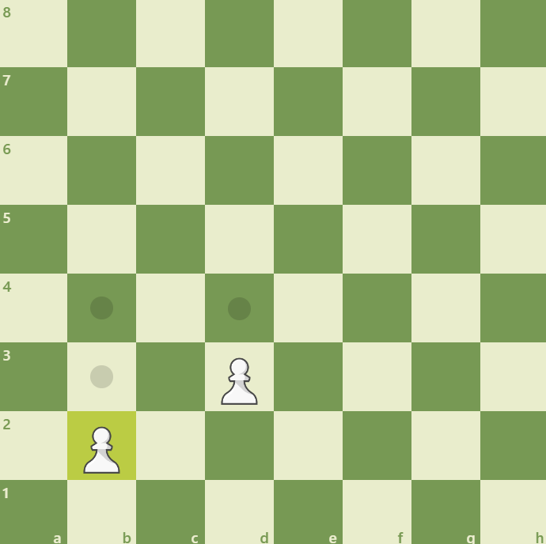

Indice
La natura e gli obiettivi del gioco degli scacchi
- Il gioco degli scacchi si gioca tra due avversari che muovono i loro pezzi su una scacchiera quadrata.
- Il giocatore con i pezzi chiari (Bianco) fa la prima mossa, il giocatore con i pezzi scuri (Nero) fa la mossa successiva e le due parti si alternano finché la partita non finisce.
- Si dice che un giocatore "ha la mossa" quando la mossa del suo avversario è stata fatta.
- L'obiettivo di ogni giocatore è quello di mettere il re avversario "sotto attacco" in modo tale che l'avversario non abbia alcuna mossa legale.
- Il giocatore che raggiunge questo obiettivo ha dato "scacco matto" al re avversario e ha vinto la partita. Non è consentito lasciare il proprio re sotto attacco, esporre il proprio re all'attacco o catturare il re avversario.
- L'avversario il cui re è stato messo sotto matto ha perso la partita.
- Se la posizione è tale che nessuno dei giocatori può dare scacco matto al re avversario, la partita è patta.
La posizione iniziale dei pezzi sulla scacchiera
- La scacchiera è composta da una griglia 8 x 8 composta da quadrati di uguali dimensioni, alternativamente
chiari (i quadrati "bianchi") e scuri (i quadrati "neri").
La scacchiera viene posizionata tra i giocatori in modo che la casella nell'angolo alla destra del giocatore sia bianca. - All'inizio del gioco il Bianco ha 16 pezzi di colore chiaro (i pezzi 'bianchi'); il Nero ha 16 pezzi di colore scuro (i pezzi 'neri').
- La posizione iniziale dei pezzi sulla scacchiera è la seguente: Clicca qui
Le mosse dei pezzi
- Non è consentito muovere un pezzo su una casella occupata da un pezzo dello stesso colore.
- Se un pezzo si sposta in una casella occupata da un pezzo avversario, quest'ultimo viene catturato e rimosso dalla scacchiera come parte della stessa mossa.
- L'alfiere può muoversi in qualsiasi casella lungo la diagonale sulla quale si trova. Clicca qui
- La torre può muoversi in qualsiasi casella lungo la colonna o la traversa su cui si trova. Clicca qui
- La regina può muoversi in qualsiasi casella lungo la colonna, la traversa o la diagonale su cui si trova. Clicca qui
- Quando si eseguono queste mosse, l'alfiere, la torre o la regina non possono muoversi sopra alcun pezzo intermedio.
- Il cavallo può muoversi in una delle caselle più vicine a quella in cui si trova, ma non sulla stessa traversa, colonna o diagonale su cui si trova. Clicca qui
- Il pedone può avanzare nella casella immediatamente davanti a sé sulla stessa colonna, a condizione che questa casella sia libera, oppure alla sua prima mossa può avanzare di due caselle lungo la stessa colonna a condizione che entrambe le caselle siano libere. Il pedone può muoversi in una casella occupata da un pezzo avversario in diagonale di fronte a sé su una colonna adiacente, catturando quel pezzo. Clicca qui
- Un pedone che occupa una casa sullo stesso rango e su una colonna adiacente al pedone di un avversario che è appena avanzato di due caselle in una mossa dalla sua casa di partenza, può catturare il pedone di questo avversario come se quest'ultimo si fosse mosso di una sola casella. Questa cattura è legale solo se eseguita subito dopo la spinta dell'avversario ed è chiamata cattura "en passant". Clicca qui
- Quando un giocatore, avendo la mossa, gioca un pedone alla traversa più lontana dalla sua posizione di partenza, deve scambiare quel pedone come parte della stessa mossa con una nuova regina, torre, alfiere o cavallo dello stesso colore sulla casella di arrivo prevista. Questa è chiamata casella di "promozione" e l'effetto del nuovo pezzo è immediato. La scelta del giocatore non è limitata ai pezzi catturati in precedenza. Non si può promuovere a re.
- Esistono due modi diversi per muovere il re: spostandosi in una casella adiacente Clicca qui o con "l'arrocco". Quest'ultima è una mossa che coinvolge il re e una delle torri dello stesso colore lungo la prima traversa del giocatore. L'arrocco conta come una singola mossa di re ed è eseguita come segue: il re viene trasferito dalla sua casella originale di due caselle verso la torre sulla sua casella originale, quindi quella torre viene trasferita nella casella che il re ha appena attraversato. Clicca qui
- Il diritto all'arrocco è stato perso se il re o la torre si sono già mosse
- L'arrocco è temporaneamente impedito se la casella in cui si trova il re, o la casella che deve attraversare, o la casella che deve occupare, viene attaccata da uno o più pezzi dell'avversario, o se tra il re e la torre c'è un pezzo.
- Una mossa è legale quando sono state soddisfatte tutte le regole dette fin'ora. Una mossa è illegale quando non rispetta le regole fino'ora dette.
Il completamento del gioco
- La partita è vinta dal giocatore che ha dato scacco matto al re dell'avversario. Ciò pone immediatamente fine alla partita, a condizione che la mossa che ha prodotto la posizione di scacco matto sia stata legale.
- La partita è persa dal giocatore che dichiara di abbandonare (ciò pone immediatamente fine alla partita), a meno che la posizione non sia tale che l'avversario non possa dare scacco matto al re del giocatore con nessuna possibile serie di mosse legali. In questo caso il risultato della partita è un pareggio.
- La partita è patta quando il giocatore che deve muovere non ha mosse legali e il suo re non è sotto scacco. Si dice che la partita finisce in "stallo". Ciò pone immediatamente fine alla partita, a condizione che la mossa che ha prodotto la posizione di stallo sia legale.
- La partita è patta quando si è creata una posizione in cui nessun giocatore può dare scacco matto al re avversario con una serie di mosse legali.
- La partita è patta in base all'accordo tra i due giocatori durante la partita, a condizione che entrambi i giocatori abbiano effettuato almeno una mossa. Ciò pone immediatamente fine alla partita.
- La partita è patta se la stessa posizione è apparsa almeno tre volte consecutivamente.
- La partita è patta dopo qualsiasi serie di almeno 75 mosse fatte da ogni giocatore senza il movimento di alcun pedone e senza alcuna cattura. Se l'ultima mossa ha portato allo scacco matto, questa avrà la precedenza.
Regolamento completo FIDE
https://handbook.fide.com/chapter/E012023Galleria di foto
La posizione iniziale dei pezzi | Ritorna su
L'alfiere | Ritorna su
La torre | Ritorna su
La regina | Ritorna su
Il cavallo | Ritorna su

Il pedone | Ritorna su
La cattura di pedone | Ritorna su
L'en passant | Ritorna su
Il re | Ritorna su
Posizione prima dell'arrocco | Ritorna su
Posizione dopo l'arrocco sull'ala di re per il bianco e sull'ala di donna per il nero |
Ritorna su